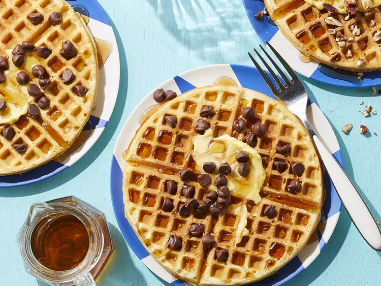

Waffle house-style waffles

Recipe description
If you're craving Waffle House waffles try this easy copycat recipe - you won't taste the difference. Serve with maple syrup, butter, and chocolate chips.
Ingredients
- 1 ½ cups flour
- 2 tablespoons cornstarch
- 1 teaspoon salt
- ½ teaspoon baking powder
- ½ teaspoon baking soda
- 1 large egg
- ¼ cup sugar
- ¼ cup salted butter, softened, plus more for serving
- 1 teaspoon vanilla extract
- 1 cup half-and-half
- ½ cup buttermilk
- cooking spray
- pure maple syrup, and/or chocolate chips, for serving